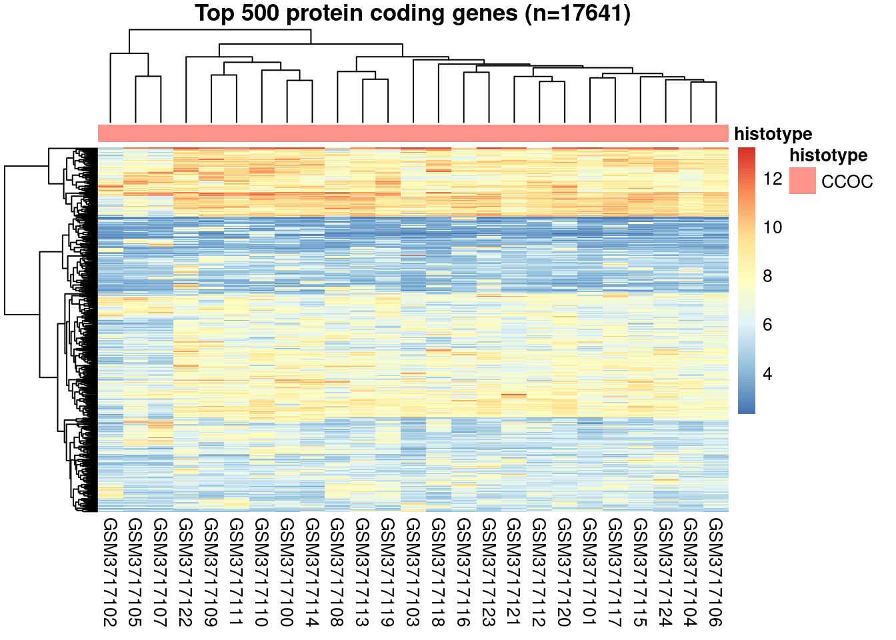
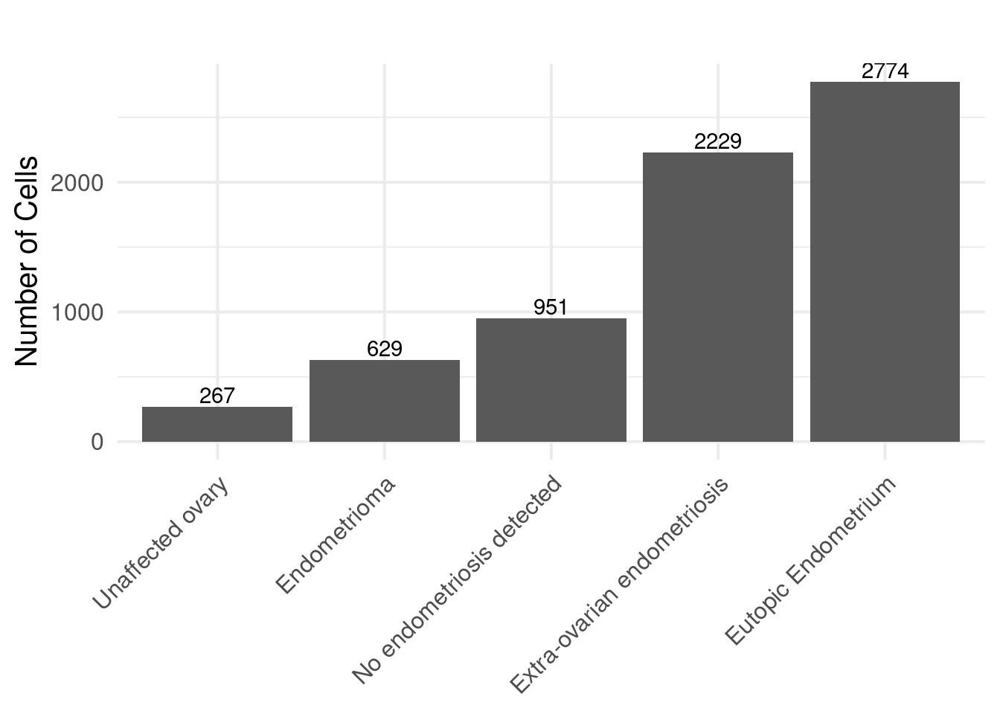
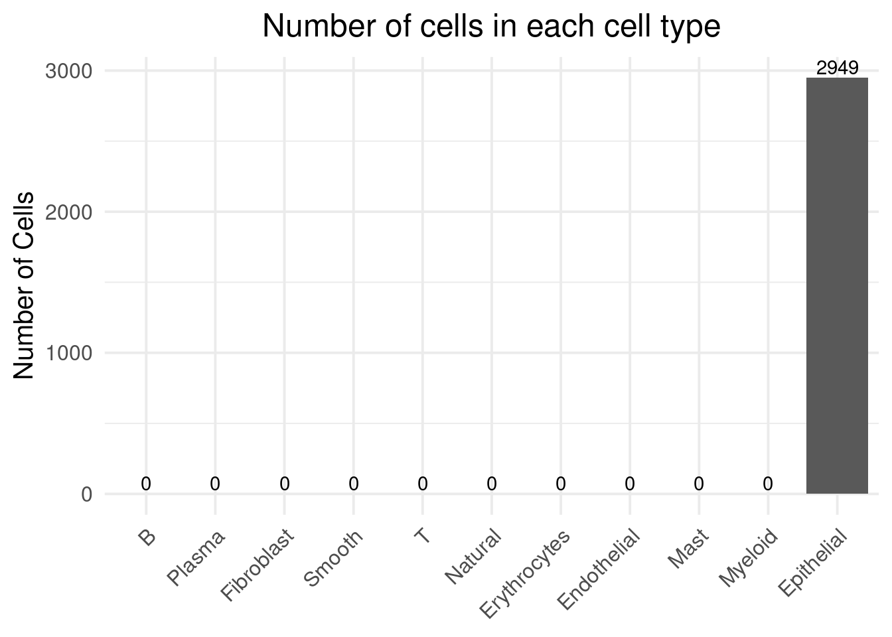
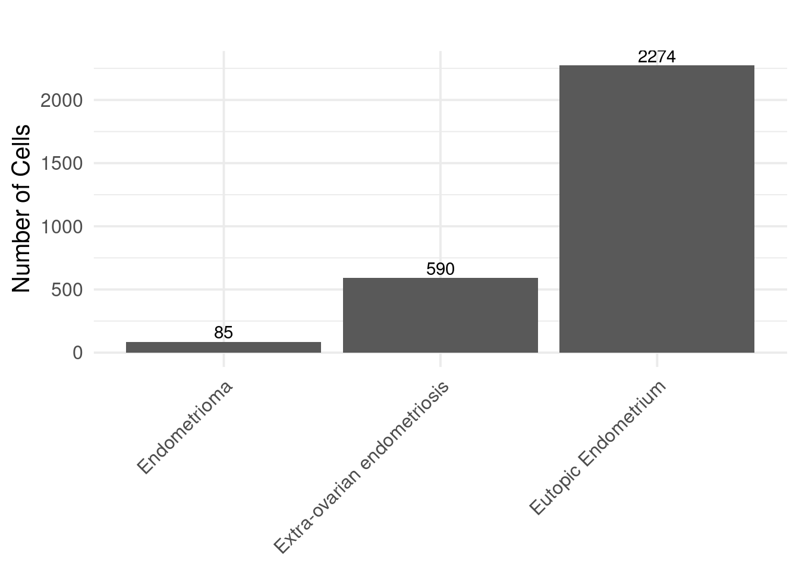
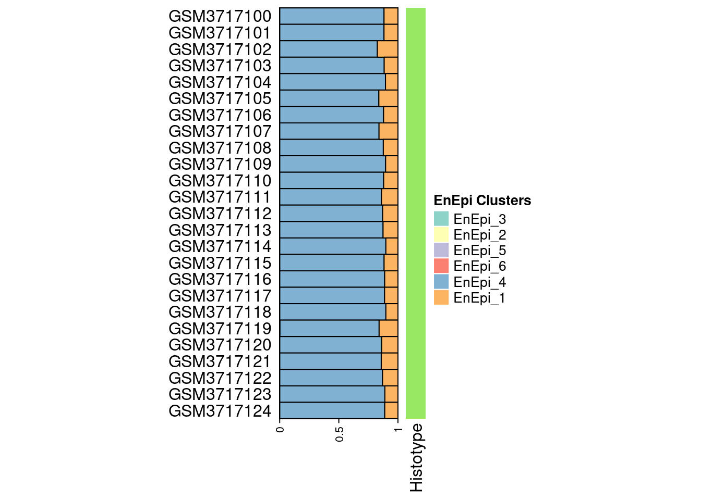

title = "25 CCOC"
load("data/ccoc_GSE129617.expr_25_samples.rda")
dim(GSE129617.expr)## [1] 43288 25df <- data.frame(histotype = c(rep('CCOC', 25)))
rownames(df) <- colnames(GSE129617.expr)
# Heapmap 0: plot top variable genes
matrix <- GSE129617.expr
matrix <- matrix[!duplicated(rownames(matrix)) & rownames(matrix) %in%
bm$external_gene_name[!is.na(bm$gene_biotype) &
bm$gene_biotype == 'protein_coding'],]
sd <- apply(X = matrix, MARGIN = 1, FUN = sd)
rank <- (length(sd) - rank(sd) + 1)
select <- rank <= 500
pheatmap(matrix[select,], cluster_rows=T, show_rownames=F, cluster_cols=T, annotation_col = df,
main = paste0('Top ',sum(select),' protein coding genes (n=', nrow(matrix), ")"))
matrix.eset = ExpressionSet(assayData=matrix, phenoData = new("AnnotatedDataFrame",data=df))sc = readRDS("rds/epithelial.cells.15.clusters.rds")
levels(sc@meta.data$seurat_clusters) <- c("EnEpi_1", "Meso_1", "EnEpi_2", "EnEpi_3", "UnEpi_1", "Meso_2", "Meso_3", "EnEpi_4",
"EnEpi_5", "Meso_4", "Meso_5", "UnEpi_2", "EnEpi_6", "UnEpi_3", "Meso_6",
"UnEpi_4"
)
Idents(object = sc) <- sc@meta.data$seurat_clustersprop.cells = data.frame(table(sc@meta.data$active.cluster))
prop.cells <- prop.cells[order(prop.cells$Freq),]
prop.cells$Var1 <- factor(prop.cells$Var1, levels = prop.cells$Var1)
ggplot(prop.cells, aes(Var1, Freq)) +
geom_col() +
theme_minimal(base_size = 15) +
geom_text(aes(label=Freq), position=position_dodge(width=0.9), vjust=-0.25) +
theme(plot.title = element_text(hjust = 0.5),
axis.text.x = element_text(angle = 45, hjust = 1),
axis.title.x = element_blank()) +
labs(title="Number of cells in each cell type", x ="Cell type", y = "Number of Cells")prop.cells = data.frame(table(sc@meta.data$Major.Class_2.0))
prop.cells <- prop.cells[order(prop.cells$Freq),]
prop.cells$Var1 <- factor(prop.cells$Var1, levels = prop.cells$Var1)
ggplot(prop.cells, aes(Var1, Freq)) +
geom_col() +
theme_minimal(base_size = 15) +
geom_text(aes(label=Freq), position=position_dodge(width=0.9), vjust=-0.25) +
theme(plot.title = element_text(hjust = 0.5),
axis.text.x = element_text(angle = 45, hjust = 1),
axis.title.x = element_blank()) +
labs(title="", x ="Major class", y = "Number of Cells")
sc.sel = subset(sc, subset = seurat_clusters %in% c("EnEpi_1", "EnEpi_2", "EnEpi_3", "EnEpi_4", "EnEpi_5", "EnEpi_6"))
sc.sel = subset(sc.sel, subset = Major.Class_2.0 %in% c("Endometrioma", "Eutopic Endometrium", "Extra-ovarian endometriosis"))
single.cell.expression.set <- SeuratToExpressionSet(sc.sel, delimiter='-', position=2, version="v3")
phenoData(single.cell.expression.set) <- AnnotatedDataFrame(sc.sel@meta.data)
prop.cells = data.frame(table(sc.sel@meta.data$active.cluster))
prop.cells <- prop.cells[order(prop.cells$Freq),]
prop.cells$Var1 <- factor(prop.cells$Var1, levels = prop.cells$Var1)
ggplot(prop.cells, aes(Var1, Freq)) +
geom_col() +
theme_minimal(base_size = 15) +
geom_text(aes(label=Freq), position=position_dodge(width=0.9), vjust=-0.25) +
theme(plot.title = element_text(hjust = 0.5),
axis.text.x = element_text(angle = 45, hjust = 1),
axis.title.x = element_blank()) +
labs(title="Number of cells in each cell type", x ="Cell type", y = "Number of Cells")
prop.cells = data.frame(table(sc.sel@meta.data$Major.Class_2.0))
prop.cells <- prop.cells[order(prop.cells$Freq),]
prop.cells$Var1 <- factor(prop.cells$Var1, levels = prop.cells$Var1)
ggplot(prop.cells, aes(Var1, Freq)) +
geom_col() +
theme_minimal(base_size = 15) +
geom_text(aes(label=Freq), position=position_dodge(width=0.9), vjust=-0.25) +
theme(plot.title = element_text(hjust = 0.5),
axis.text.x = element_text(angle = 45, hjust = 1),
axis.title.x = element_blank()) +
labs(title="", x ="Major class", y = "Number of Cells")
verbose = T)Est.prop = music_prop(bulk.eset = matrix.eset,
sc.eset = single.cell.expression.set,
clusters = 'seurat_clusters',
samples = 'SampleName',
verbose = F)bp.esti.pro = Est.prop$Est.prop.weighted
bp.esti.pro = merge(bp.esti.pro, df, by=0)
bp.esti.pro = bp.esti.pro[match(rownames(df), bp.esti.pro$Row.names), ]
head(bp.esti.pro)## Row.names EnEpi_3 EnEpi_2 EnEpi_5 EnEpi_6 EnEpi_4 EnEpi_1 histotype
## 1 GSM3717100 0 0 0 0 0.8822250 0.1177750 CCOC
## 2 GSM3717101 0 0 0 0 0.8819691 0.1180309 CCOC
## 3 GSM3717102 0 0 0 0 0.8257661 0.1742339 CCOC
## 4 GSM3717103 0 0 0 0 0.8835599 0.1164401 CCOC
## 5 GSM3717104 0 0 0 0 0.8944826 0.1055174 CCOC
## 6 GSM3717105 0 0 0 0 0.8383448 0.1616552 CCOCcollorder = c("#8dd3c7", "#ffffb3", "#bebada", "#fb8072", "#80b1d3", "#fdb462")
anno_width = unit(3, "cm")
ht_list = rowAnnotation(text = anno_text(bp.esti.pro$Row.names,location = unit(1, "npc"),
just = "right",
gp = gpar(fontsize = 12)))
ht_list = ht_list + rowAnnotation("est" = anno_barplot(bp.esti.pro[, c(2:7)], bar_width = 1, gp = gpar(fill = collorder, fontsize = 14),
width = anno_width), show_annotation_name = FALSE) +
rowAnnotation(Histotype = anno_simple(bp.esti.pro$histotype), gp = gpar(fontsize = 20))
draw(ht_list, heatmap_legend_list = Legend(title = "EnEpi Clusters", labels = colnames(bp.esti.pro[, c(2:7)]), legend_gp = gpar(fill = collorder)))